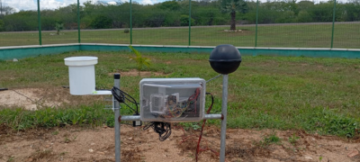

Nossos Projetos em Destaque
Explore as soluções inovadoras criadas pelos nossos alunos de ADS!

Calculadora de Varejo em C
Algoritmo para cálculo de vendas e descontos dinâmicos em produtos de prateleira.

Simulador de Equivalência Lógica
Interface interativa para validar proposições lógicas e tabelas verdade em tempo real.

Estação Meteorológica
Estação de baixo custo para monitoramento climático em tempo real. Ideal para pesquisas e agricultura, cobrindo desde o esquemático até a montagem final.

Estufas Automatizadas
Controle de qualidade de água e ambiente para tanques e estufas. Gerencia válvulas e irrigação via relés com horários programados e monitoramento via Telegram.

Hidro-Webnia
Solução hidropônica com monitoramento contínuo de nutrientes e pH via sensores. Foco em aumentar a rentabilidade e supervisão precisa do cultivo.

Dashboard de Armazenamento
Ferramenta para cálculo e conversão de capacidades de disco (Bytes para GB/TB).

Portal Académico Responsivo
Página web completa desenhada com HTML, CSS puro e variáveis de controle de temas.

App de Mobilidade Urbana
Protótipo focado na visualização de rotas de transporte escolar rurais.

Estufa IoT Automatizada
Projeto combinando hardware e back-end para monitorização de humidade do solo.
É aluno e o seu projeto não está aqui?
Seu projeto pode inspirar outros desenvolvedores. Publique sua criação, contribua com a comunidade do IFCE e dê visibilidade real ao seu trabalho!
send Envie aqui o seu projeto